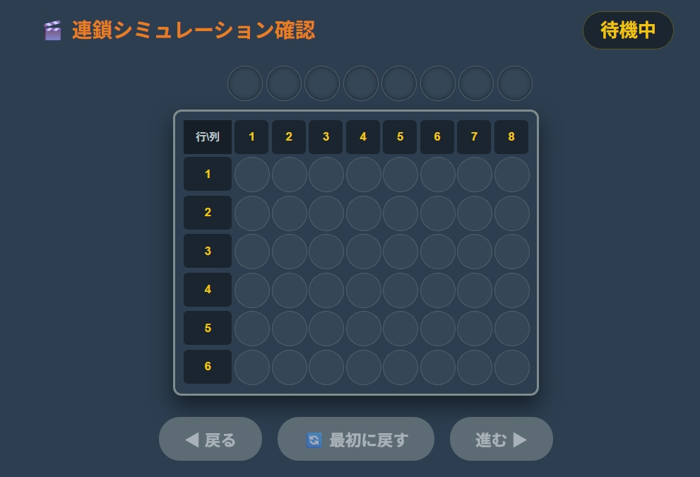

【アップデート】連鎖シミュレーション（コマ送り確認）機能を追加しました
「ぷよクエ解析シミュレータ」の機能改善として、探索完了後に「どのようにぷよが消え、連鎖が繋がっていくか」を1手ずつステップ再生できるコマ送りプレイヤー機能を実装しました。

▲ 実装された連鎖シミュレーションプレイヤーのUI
1. 機能追加の背景
従来のシミュレータでは、探索結果として「ぬりかえ後の完成盤面」と「最初になぞる位置」のみを表示していました。しかし、複雑な連鎖においては「どのタイミングでボーナスエリアぷよが消えているのか」が直感的に分かりにくいという課題がありました。
2. 操作方法
探索を実行して最高得点が見つかると、画面下部のプレイヤーエリアが自動的に更新されます。
💡 コントローラーの操作方法
・「進む ▶」: なぞり消し ➔ ぷよ落下 ➔ 各連鎖消滅 ➔ NEXT補充 を1コマずつ進めます。
・「◀ 戻る」: 1つ前の盤面状態に巻き戻します。
・「🔄 最初に戻す」: 塗り替え直後の初期盤面にリセットします。
・「進む ▶」: なぞり消し ➔ ぷよ落下 ➔ 各連鎖消滅 ➔ NEXT補充 を1コマずつ進めます。
・「◀ 戻る」: 1つ前の盤面状態に巻き戻します。
・「🔄 最初に戻す」: 塗り替え直後の初期盤面にリセットします。

▲ 連鎖途中の得点加算とNEXTぷよ落下のコマ送り画面
3. C言語エンジンとの完全同期
コマ送り再生では、ハートぷよの巻き込み消去や各列ごとのNEXT落下キュー管理など、C言語側のアルゴリズムと100%同一の挙動を再現しています。